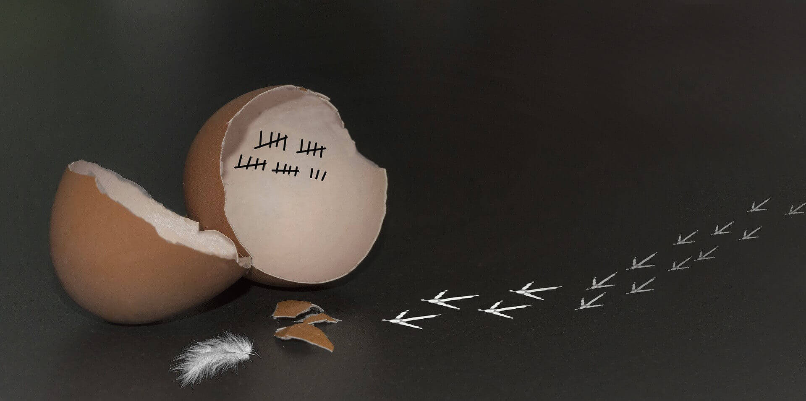
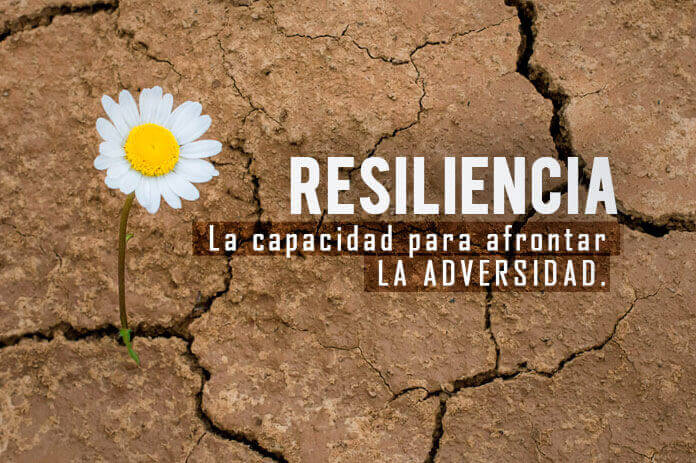

Bienvenidos a mi Blog!
Home
Blog
Contacto

¿Cómo vencer la zona de Confort?
Febrero 2018
¡Control de Versiones?
Enero 2018

¿Resiliencia?
Octubre 2017
Ada Lovelace(Londres, 1815–1852)
Octubre 2017
Todos los derechos reservados by JuantaDev 2018